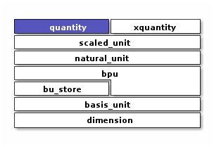

Quantity Factory Functions
Convenience functions for creating quantities with compile-time units
Context
Introduction
#include <xo/unit/quantity.hpp>
Mass
Distance
-
template<typename Repr>
inline constexpr auto xo::qty::qty::inches(Repr x) create quantity representing
xinches of distance, with compile-time unit representation
-
template<typename Repr>
inline constexpr auto xo::qty::qty::feet(Repr x) create quantity representing
xfeet of distance, with compile-time unit representation
Time
-
template<typename Repr>
inline constexpr auto xo::qty::qty::seconds(Repr x) create quantity representing
xseconds of time, with compile-time unit representation
-
template<typename Repr>
inline constexpr auto xo::qty::qty::minutes(Repr x) create quantity representing
xminutes of time, with compile-time unit representation
-
template<typename Repr>
inline constexpr auto xo::qty::qty::hours(Repr x) create quantity representing
xhours of time, with compile-time unit representation